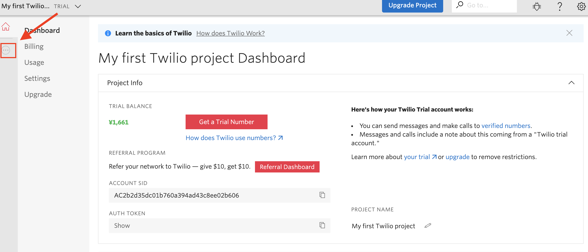
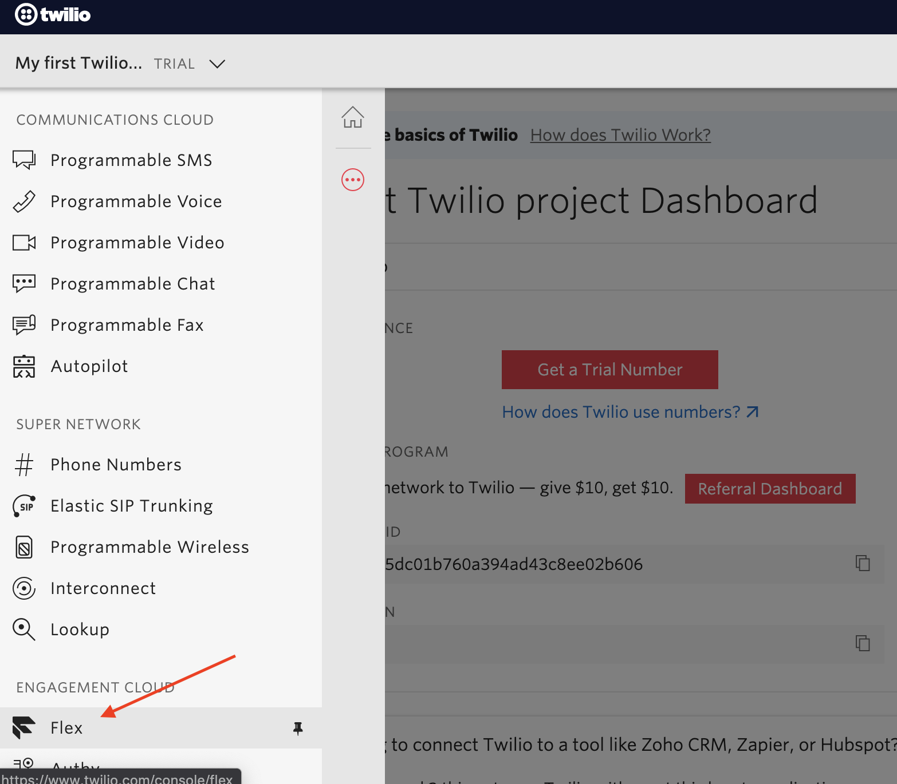
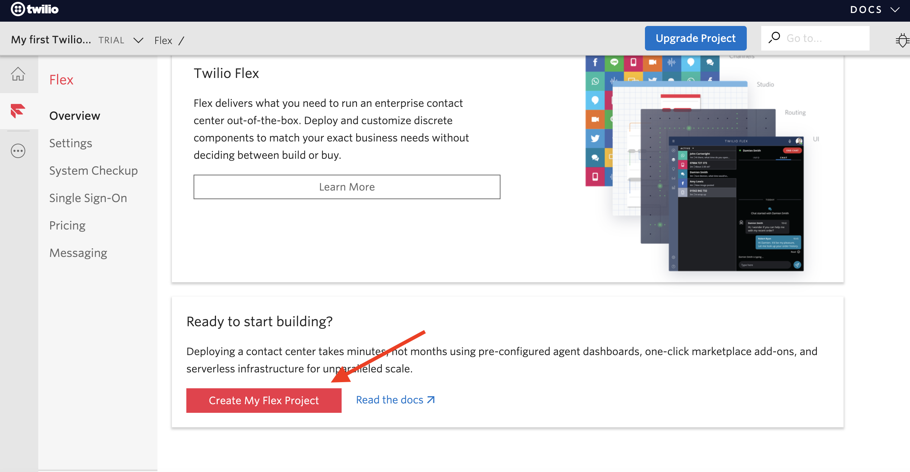
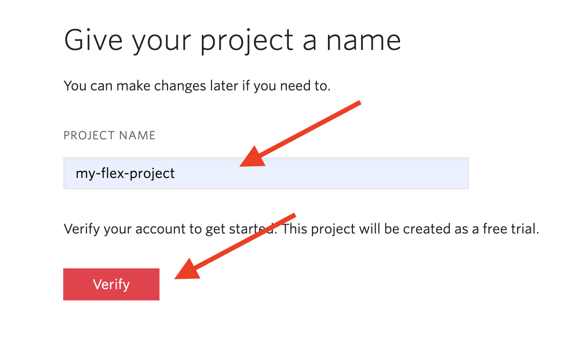
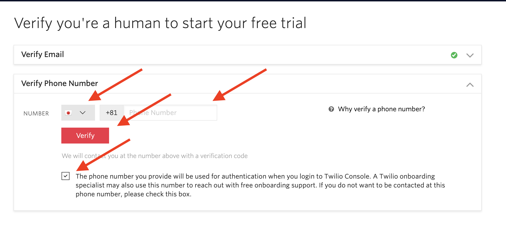
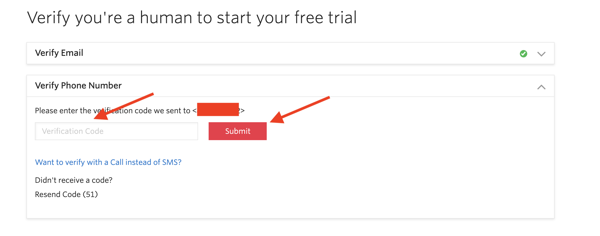
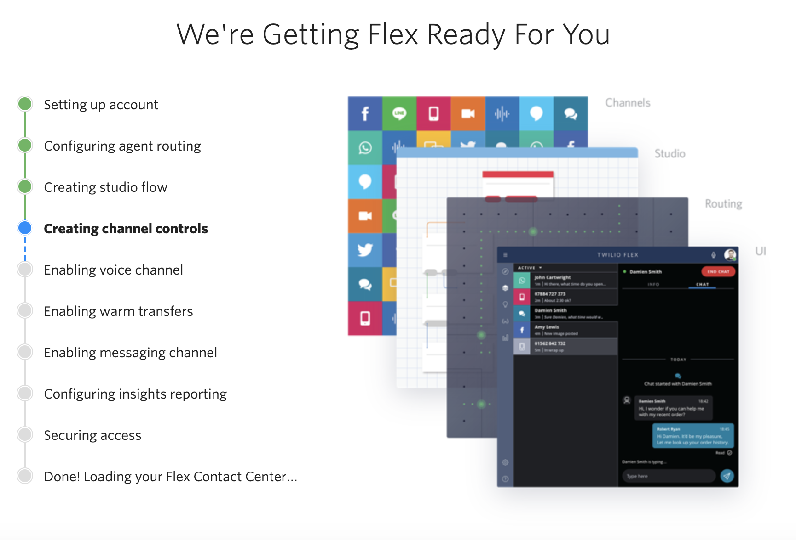
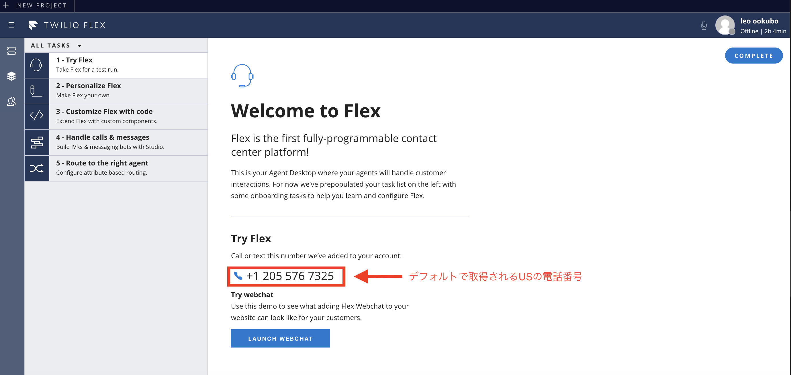
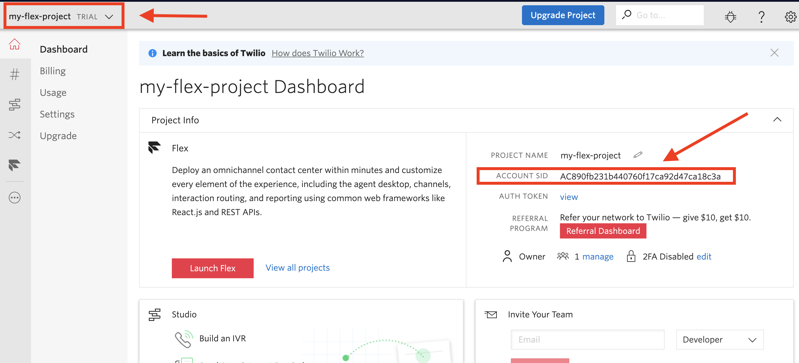
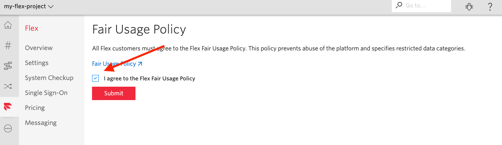

3. Flexプロジェクトの作成¶
この章ではコンタクトセンターとなるFlexを構築するための手順を説明します。
3-1. Twilioにログイン¶
3-2. プロジェクト作成¶
1 . **https://www.twilio.com/console**に遷移します。¶
2 . ページの左側にあるメニューを表示させてFlexをクリックします¶
 
3 . Create My Flex Project をクリックします¶

4 . 任意のプロジェクト名を入力し、Verify をクリックします¶
※ 半角全角英数字が可能 
5 . 電話番号の確認を行います¶
日本を選択し、所有する電話番号を入力してVerifyをクリックします。
The phone number you provide will 〜〜〜 のチェックボックスにチェックを入れてください。
推奨: 携帯電話の番号(SMSで送信されてきます)

6 . コードの検証¶
入力した電話番号にTwilioからコードが送られてきます。
入力してVerifyをクリックします。

検証が終わると、自動的にTwilio Flexのデプロイが行われます。
 デプロイ中の画面
デプロイが完了すると、自動的にFlexのUIにリダイレクトされます。

3-3. プロジェクトのコンソールの確認¶
ブラウザの別タブで https://www.twilio.com/console を開きます。

作成したFlexプロジェクトになっていることを確認します。 なっていない場合は画面左上から切り替えます。
ACCOUNT SID に表示されている文字列を控えます。
※ 本ハンズオンを円滑に進めるために必要になります
3-4. Policyへの同意¶
ブラウザの別タブで https://www.twilio.com/console/flex/fair-usage-policy を開きます。

I agree to the Flex Fair Usage Policyにチェックを付け、Submitをクリックします。
この章は以上で終了になります。